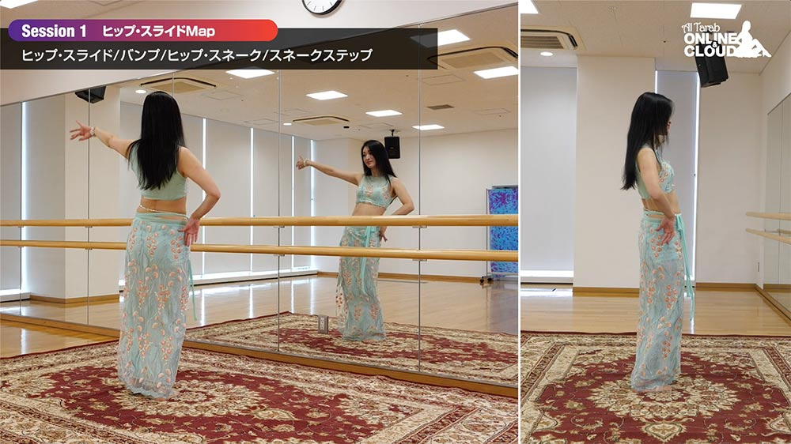
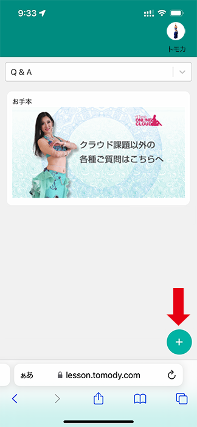
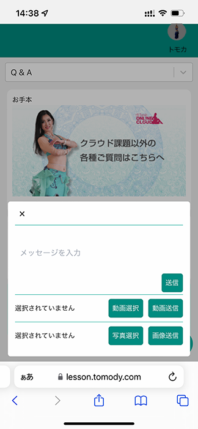
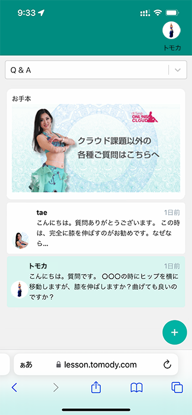
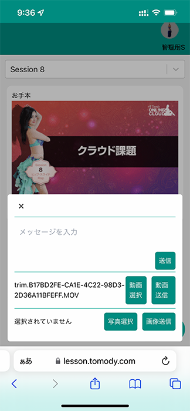
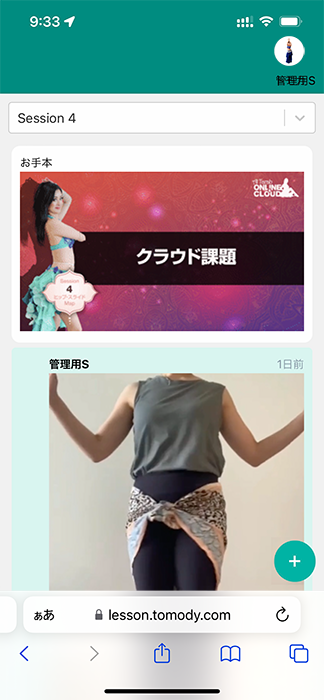
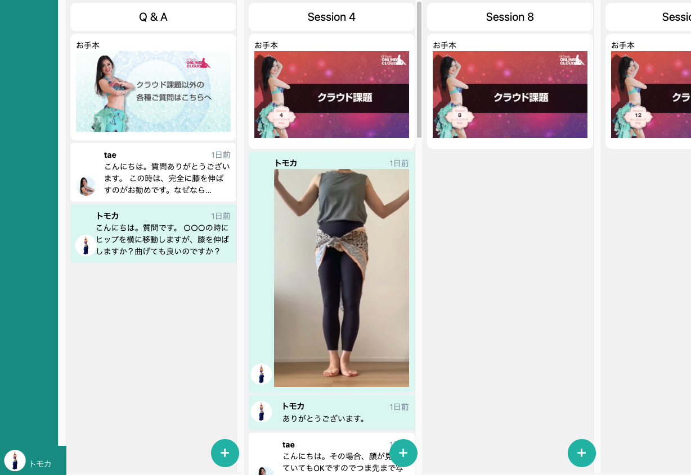
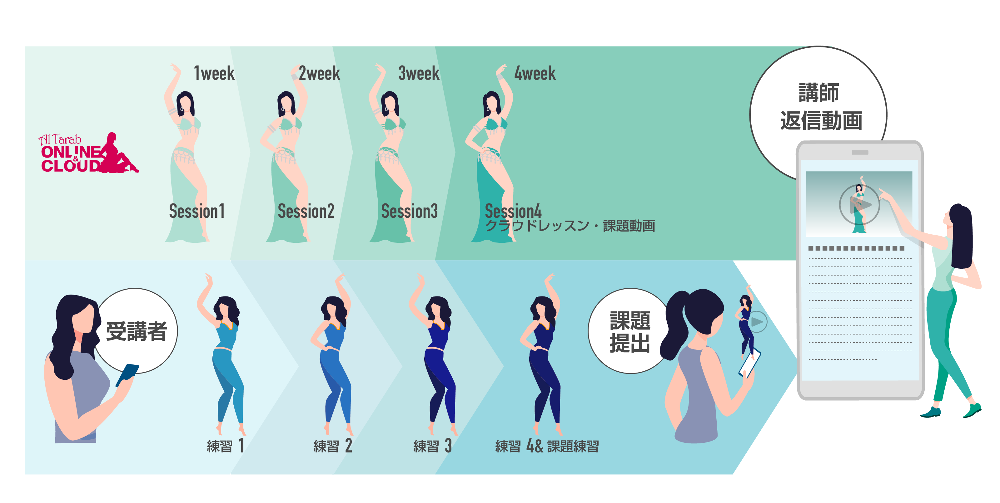
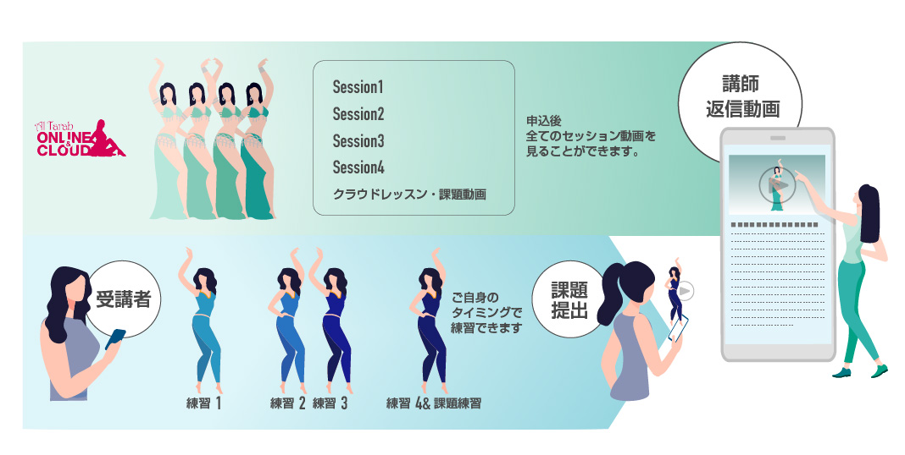

エジプシャン・ベリーダンスの基礎構築プログラム
まるで、
「ベリーダンス基礎大全」！
『ダンス・マイン
ドマップ』と『クラウドレッスン』で楽しく踊る
※1 基礎動作 69種類・ステップ 20種類・まとめ振付 24種類・クラウド課題 8種類。
全てのメニューはオリジナルの「ダンス・マインドマップ」に基づいています。直前のレッスンを「発展」させ続けることで、圧巻のメニュー数ながら「迷いにくい」「応用力が身に付く」「確実に記憶に残る」などのベネフィットをもたらします。 基礎がしっかり身に付くため、振付の仕上がりもランクアップ︕踊る楽しみがどんどん広がります。。

競技会受賞者を輩出し続けるAl Tarabは、「成⻑が見える、身に付くレッスン」が定評。独自開発のTOMODYレッスンチャットを活用する 「クラウドレッスン※2」で、全員が個別指導を受け、急成⻑する機会を設けました。 メニュー公開後もレッスンアイデアを随時加筆。受講生との交流を通じて、メニューが洗練されていきます。
※2 動画・音声・イラストを使った添削動画のやりとり。提出期限あり
国内外に向けたベリーダンス関連著作数「日本一」。「豊かな感性と楽しく美しく踊る喜び」を提供します。 単行本レベル量の深掘り解説とまとめ振付は、現在のレッスンに満足を感じられない方、通学が難しい方、基礎構築に集中して取り組みたい方にこそ、隙間時間に効率良く学べる当教室のレッスンは大変おすすめです。
受講者の⾃撮り動画を講師が添削する、完全プライベートレッスン※を 4セッション毎にご⽤意。⾃宅に居ながら、楽しく PDCA を回します。 ダンサーに向けて⾃社開発したTOMODYレッスンチャットを使⽤し、スムーズにスキルを積み上げます。
※クラウドレッスン

①質問や課題などチャットを通じて講師と連絡を取ります。右下のを押してコメントや画像、動画を送信します。

②コメントを入力し、送信ボタンを押すとTOMODYレッスンチャットにコメントが送信されます。

③講師から返答コメントが返ってきます。

④動画や画像の場合は、送信する動画または画像を選択して送信します。

⑤TOMODYレッスンチャットに動画または画像が反映されます。

PC版TOMODYレッスンチャット画面
レッスンの流れ

月額プラン
オリジナルの「ダンス・マインドマップ」に則った レッスン教材を利⽤して週 1 回受講。4 配信毎のクラウドレッスン（直前 3 配信のまとめ振付）の動画課題を⾃撮りして提出します
（提出は任意です。提出をしなくても配信は続きます）。
折返し、講師からコメントとイラストを使った添削動画を返却します。課題動画の提出期限はクラウドレッスンの配信日から4ヶ月以内。

一括プラン
入会後に全セッションが配信されます。自分のペースで、自分の好きなセッションからレッスンを始めることができます。レッスン教材を利用してクラウドレッスンの動画課題を自撮りして提出します。
折返し、講師からコメントとイラストを使った添削動画を返却します。クラウドレッスンの提出期限は入会日から2年以内。
FROM tae （Al Tarab主宰）
Al Tarabは「2つの信念」を持ってエジプシャン・スタイルのオリエンタルダンスと中東各地の⺠族舞踊を指導しています。
Al Tarab
オンラインレッスンの
特徴
-
ベリーダンス
基礎大全好きな時間と場所で、本格的で美しいエジプシャン・スタイルのベリーダンスを学べます。現在のレッスンに満足を感じられない方、通学が難しい方、基礎構築に集中して取り組みたい方にこそおすすめです。「クラウドレッスン」を通じ、不安の解消や上達を確認する機会を設けています。
-
「マインドマップ」で
圧倒的に身に付くオリジナルの「ダンス・マインドマップ」に基づいた構成の、全く新しいダンスレッスンです。「クラウドレッスン」を活用することでPDCAをしっかり回し、基礎修了まで確実に導きます。楽しく学べるので、継続のモチベーションを維持できます。
-
オンライン
コミュニティのイベント講師と受講生の交流を目的としたSNS風のチャットなどのほか、ミニ発表会や各種企画を開催予定。SEASON2以降の振付プログラムでは、2021年にオープンしたばかりの動画撮影スタジオで講師と一緒に踊るMV風動画や宣伝写真風の記念撮影の機会をご用意します（別途費用が発生します）。
学生時代より、東京コレクションなどのランウェイやビューティページ、CMを中心にプロのファッションモデルとして活動。モデルを引退後、ビューティ専門の輸入商社にて広報とプロモート業務に携わり、国内外のビューティの最先端に携わる。
2002年にMISA（al Amal )に師事。ベリーダンスの芸術性とボディーメイク効果に感銘を受け、ベリーダンスとボディーメイキングを融合したエクササイズ・メソッド「Bellybics(ベリービクス）」を提案。
2005年に単行本の執筆を始め、海外翻訳版も出版されるほどの大ヒットとなった。以降も執筆を続け、ベリーダンスに関する書籍やアプリ、DVDなど日本一の著作数をリリース。「ベリーダンス・ダイエットのパイオニア」としても知られるようになり、トータルで10万部を売り上げた。
執筆経験の中で、「未経験者でも踊れるようになる」ベリーダンスの指導メソッドを確立。同時に、自身の美容知識を共有する上で日本化粧品検定主催「コスメコンシェルジュ」資格の取得、アロマテラピー検定1級を取得。インドの健康法「アーユルヴェーダ」への見解も深い。
全国的なコンペティションで国内最年少受賞者を育成するなど確かな指導力で、とことんわかりやすく楽しいレッスンをモットーとしている。
月額プラン
- 今だけ！初月半額でご利用頂けます！
- 週 1 回配信。8 ヶ⽉間のレッスンでエジプシャン・スタイルのベリーダンス基礎・応⽤・振付（合計 121種類）の習得を⽬指します。
- 1 配信には 4 つ（⾼難易度の場合は 3 つ）の基礎動作のテキスト解説とデモンストレーション動画、まとめ振付動画で構成。4 配信毎に個⼈指導が受けられます。
- 全配信のお⽀払いを完了した場合、すべてのページを引き続きご覧いただけます。
- 途中解約の場合、解約後は受講済を含むすべてのページが閲覧できません。
一括プラン
- ⽉額プランに⽐べて合計 5,050 円お得です。
- レッスンの内容は月額プランと同じです。入会手続き完了後に全てのセッションが配信されます。自分のペースで自分の好きなセッションからレッスンを始めることができます。
- 全配信修了後もすべてのページを引き続きご覧いただけます。
- ※こちらのプランは銀行振込対応しております。メールにてお問い合わせ下さい